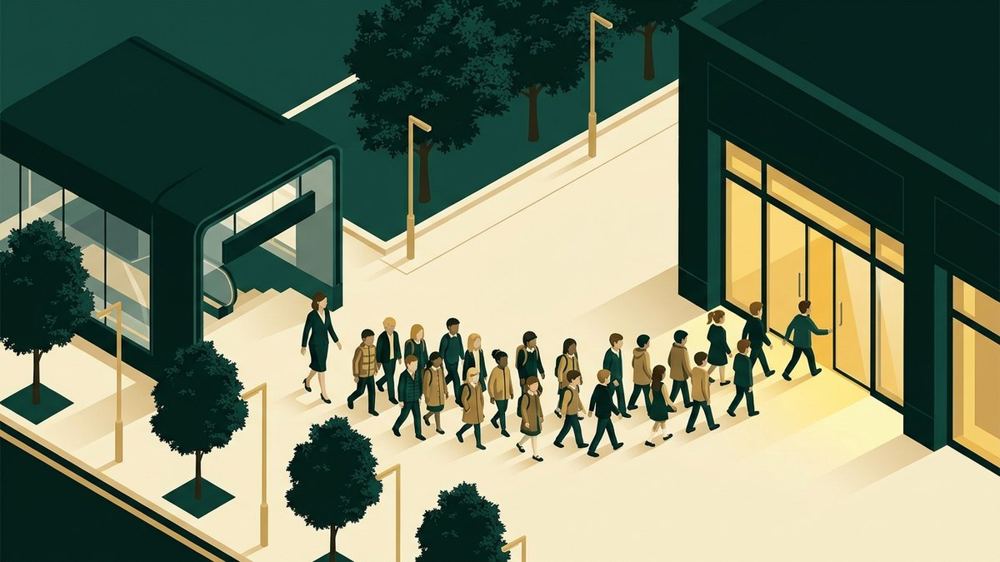
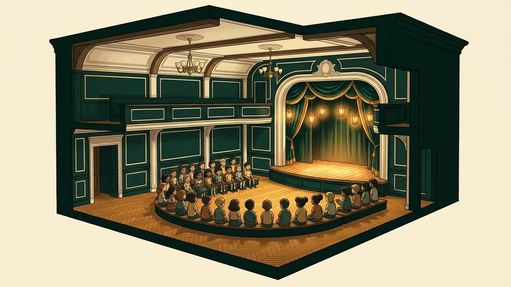
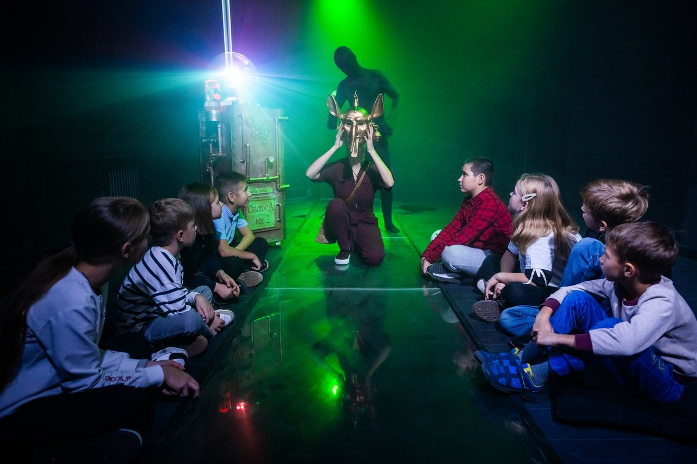
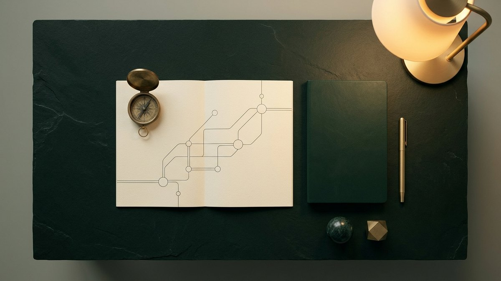
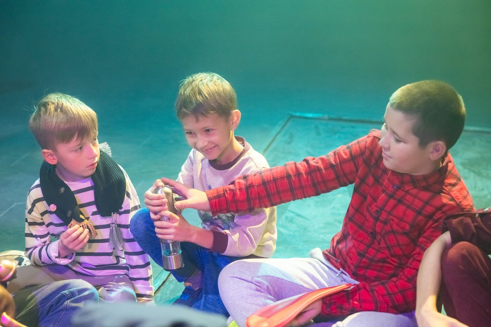

Выезд класса без заказного автобуса и деления группы: как устроена дорога до м. Фили

Живой симулятор размера класса (5-45 учеников): почему деление ломает поездку
Подвигайте ползунок под реальное количество детей в вашем классе или нажмите готовую кнопку. Схема слева нарисует, сколько раз малые квест-комнаты (до 15 человек) заставят разбивать класс на подгруппы, а зал справа покажет рассадку всех детей вместе.

Один зал до 45 человек: меньше тревоги педагогу, больше общих впечатлений
Когда класс разделяют на две разные очереди по четырнадцать человек, половина детей полтора часа ждёт в тесном вестибюле или кафе, а потом два полукласса спорят о разных впечатлениях по дороге домой. Учителю приходится искать второго и третьего сопровождающего взрослого только ради контроля разведённых групп.
В закрытом зале на Багратионовском проезде весь коллектив остаётся в общем пространстве от первой минуты пролога в фойе до финальной сцены программы. В поле зрения классного руководителя и ведущих находятся все участники сразу, без чужих туристических групп и постороннего шума.
Отдельно педагоги отмечают отказ от долгого автобусного фрахта по Москве. Заказной автобус для школы требует полного пакета списков, приказов, уведомлений ГИБДД за несколько дней до даты и все равно не защищает класс от утреннего затора на ТТК или Кутузовском проспекте. Поездка по Филёвской линии метро или по МЦД-1 рассчитывается буквально до минуты: класс садится на своей станции, выходит на «Филях», за три-пять минут доходит до тёплого холла и заходит в пролог без опоздания.
Как 25-40 ребят одинаково хорошо видят и слышат сюжет
Камерная сцена и рассадка полукругом выстроены так, чтобы даже в группе из 35 школьников каждый участник передавал реквизит по кругу и видел детали предметов перед ведущей. Никому не приходится вставать на носочки за широкими спинами взрослых посетителей, как это часто бывает у экспозиций больших музеев.
Доступны разные форматы именно под ваш состав: для младших школьников «Москва. Тайна потерянных бусин», для 4-7 классов камерное «Другое Детство», для старших «Голос города», а также сезонные «Новогодняя шоу-игра» и «Детективная иммерсивная Масленица наоборот».

Интерактивный чертёж маршрута от м. и МЦД-1 «Фили» до зала
Нажмите на любой этап маршрута на схеме или кнопке, чтобы посмотреть точный ориентир, время буфера перед началом и удобство для сопровождающих родителей.
Органайзер родкомитета и вовлечение детей внутри здания
Отказ от заказного автобуса экономит учителю часы бюрократических согласований маршрута и убирает зависимость от утренних пробок. Если погода в день выезда испортилась, ребята проводят на открытом воздухе всего три-пять минут до дверей ТРЦ «Филион», а затем раздеваются в тёплом гардеробе.
Для родительского комитета важным плюсом становится бытовая инфраструктура в одном здании: сопровождающим взрослым не нужно мёрзнуть у ворот парка или искать кофейню через дорогу. Пока дети 90 минут участвуют в расследовании с ведущими, мамы и папы спокойно пьют чай на фудкорте или решают дела, а сразу после окончания игры класс при желании обедает там же перед обратной дорогой к метро. Заранее в родительском чате достаточно собрать подтверждения участников, раздать сопровождающим бейджи со списками подгрупп для дороги в метро и уточнить расчёт программы под точное количество школьников по телефону +7 (495) 145-35-00.


Чек-лист выбора транспорта для класса
Переключайте режим выезда, чтобы сравнить организационную подготовку учителя до начала программы.
Сравнение вариантов школьной логистики по Москве
Параметры вместимости, пробок и тёплой инфраструктуры рядом с площадкой. Точные условия сторонних объектов уточняют на их официальных сайтах.
| Площадка | Как добраться без пробок | Порог размера класса | Тепло, туалеты, ожидание | Условия расчёта |
|---|---|---|---|---|
| Точка Счастья. Дети (ТРЦ «Филион») | 3-5 мин от м. и МЦД-1 «Фили» | 5-45 учеников в одном зале | Собственный гардероб, санузлы, фудкорт, парковка | Под группу и дату по +7 (495) 145-35-00 |
| Классический квест-рум | Разные адреса по городу | Обычно до 8-15 детей (деление на команды) | Небольшая зона ожидания, бывает без гардероба | Уточнять у выбранного оператора |
| Музей под открытым небом (ВДНХ, Царицыно) | До 15-25 мин пешком по улице от метро | Группа может делиться у входного контроля | Открытая территория зависит от дождя и снега | Уточнять на сайте музея-заповедника |
| Заводское производство | Обычно требуется заказной автобус | Строгие квоты по 15-20 человек с сопровождением | Проходная завода и переобувание по графику | Уточнять у организатора экскурсий |
Частые вопросы о выезде класса
Можно ли привезти весь класс 30-35 учеников без деления на две смены?
Да. Единый зал площадки «Точка Счастья. Дети» в ТРЦ «Филион» принимает от 5 до 45 школьников за один заход, поэтому класс проходит программу одновременно.
Нужен ли заказной автобус и согласование перевозки детей?
При выезде на метро и МЦД-1 до станции «Фили» заказной автобус не требуется: пеший путь до ТРЦ «Филион» на Багратионовском проезде, д. 5 занимает 3-5 минут.
Что происходит, если кто-то из учеников чуть опоздал к началу?
Для спокойного сбора предусмотрен пролог 10-15 минут в фойе перед основным залом, за это время ребята успевают снять куртки в гардеробе и подготовиться к старту.
Где ждут родители и есть ли парковка?
Внутри ТРЦ «Филион» работают гардероб, санузлы, парковка и фудкорт, где сопровождающие родители спокойно ждут окончания 90-минутной программы.
Какие программы доступны для целого класса сразу?
Работают «Москва. Тайна потерянных бусин», «Другое Детство», «Голос города», «Детективная иммерсивная Масленица наоборот» и «Новогодняя шоу-игра».
Как узнать точную стоимость под число детей в нашем классе?
Администраторы рассчитывают сумму под конкретное количество школьников и выбранную дату по телефону +7 (495) 145-35-00.